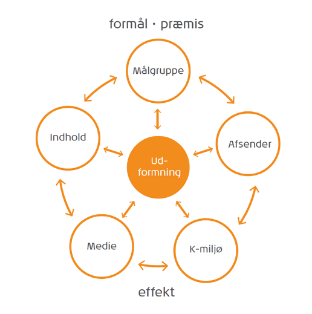

Produktionsmodeller
Der findes nogle værktøjer og modeller, der gør det lettere at opstarte et nyt samarbejde med en kunde. Det kan nemlig være en stor opgave, og der er mange ting, der skal overvejes nøje. Med produktionsmodeller bliver det lettere at planlægge opgaven for kunden, og de kan lette besværet med at finde de helt rigtige informationer.
De 29 spørgsmål
Vi har i faget Virksomhed udviklet en håndbog på tværs af klassen. I håndbogen indgår der en beskrivelse af de 29 spørgsmål og en beskrivelse af, hvad hvert spørgsmål handler om. Afsnittet fra håndbogen er brugt her i opgaven.
Sætningen ”Hvem siger hvad gennem hvilken kanal til hvem og med hvilken effekt?” kan siges at være en opsummering af alle disse. Formålet med spørgsmålene er at skabe klarhed om produktet, og de skal sikre, at produktet eksempelvis ikke markedsføres forkert. Ved at gennemtænke både kommunikationen omkring produktet og dets formål, er det lettere at stå stærkt.
Spørgsmålene kan deles op i forskellige kategorier afhængigt af, hvad spørgsmålet handler om. Nogle handler om målgruppen, mens andre handler om juridiske udfordringer. Det er dog ikke alle spørgsmål, der kun tilhører en enkelt kategori. Det kan nemlig godt ske, at de ligger og svæver på grænsen mellem to eller flere kategorier.
Modtager
- Hvem er målgruppen?
- Her skal man definere, hvilken gruppe af mennesker, som produktet skal henvende sig til. Hvem er de? Hvad ved vi om dem? Segmenteringsmodeller er en fordel at bruge her.
- Hvilken effekt skal produktet have hos målgruppen?
- Hvad vil man gerne have, at modtageren gør eller tænker, når de ser budskabet? Det kan f.eks. være et budskab for et politisk parti, hvor den ønskede effekt er at få modtageren til at stemme på netop dette parti.
- Hvad er formålet med effekten hos målgruppen?
- Kunden skal ændre sin holdning eller synspunkt til det givne emne eller situation, eller også skal kunden rette sin opmærksomhed mod netop dit produkt.
- Hvor meget skal der med?
- Man skal lave research og indsnævre, hvad der skal med. Man skal skabe identifikation, så forbrugerne kan se sig selv med produktet.
- Hvordan påvirkes målgruppen ellers af lignende budskaber?
- Undersøg om andre spørgsmål inden for emnet som målgruppen kan påvirkes af. Man skal forholde sig til din løsning til produktet og selve produktet, der skal kommunikeres om. Det handler om at få viden, om den betydning modtagerne får, om netop dét emne budskabet handler om. Husk at dit budskab er et af flere i undersøgelsen.
Afsender
- Hvem er afsenderen?
- Afsenderen kan både være en virksomhed, de ansatte, men det kan også være kunder. Hvis kunden bidrager med materiale, der skal justeres, så er kunden også medvirkende til at være afsender. Afsenderen er altså den gruppe, der skal ud med et produkt.
- Indgår produktet i en strategi eller politik?
- Enhver virksomhed med respekt for sig selv har et værdisæt, der beskriver, hvad virksomheden står for. Produktet skal passe til værdisættet. Hvis eksempelvis en fin restaurant har en dårligt lavet hjemmeside, så er der opstået et mismatch.
- Hvilken effekt skal produktet have hos afsenderen og med hvilket formål?
- Der er altid en årsag til, at en virksomhed fremstiller forskellige former for produkter, men disse årsager kan være vidt forskellige. Det kan eksempelvis være et forsøg på at måle sig med konkurrenterne, tjene masser af penge eller for at styrke sit image. Det skal få virksomheden til at fremstå konkurrencedygtig i forhold til konkurrenterne.
Det kan også handle om, at flere personers ønsker skal gå op i en højere enhed. Hvis du eksempelvis skal udvikle noget for en virksomhed, du er ansat i, er det din opgave at få dette til at ske, samt at realisere virksomhedens værdisæt i dit produkt. - Hvilke færdigheder skal producenten have?
- Kan man selv finde ud af opgaverne, eller skal der andre ind over.
- Hvilken viden skal producenten have?
- Har man sat sig nok ind i projektet for at kunne løse den. Man skal kende sig selv, så man kan vurdere, om man skal vide mere om projektet for at kunne løse det, eller om man bare skal sige pænt nej tak til opgaven.
Rammer
- Hvad er budskabet?
- Spørgsmål vedrørende budskabet skal stilles før nogen form for producering. Hvad skal modtageren have ud af det? Hvilken konklusion skal vedkommende drage? Det kan både være et eksplicit og implicit budskab.
- Hvad er mediet?
- Hvilket medie skal benyttes for at transportere budskabet fra afsender til modtager? Skal det være en hjemmeside, en avisannonce eller måske noget helt tredje? Dette er helt centralt at vide, når man skal levere en multimedieløsning til en kunde.
- Hvor, hvornår og hvordan skal målgruppen opleve produktet?
- Tænk igennem hvor og hvornår målgruppe og produkt skal præsenteres for hinanden. Når du har en plan for, hvornår præsentationen skal foregå, er der en bedre mulighed for, at dit arbejde ikke er spildt. Laver du en intern løsning, skal du trække på den viden, du har om virksomhedens interne processer og faget. Man kan også opstille personaer og scenarier på baggrund af interview og observationsstudier af konkrete oplevelser af, hvordan personer handler i givne situationer i forbindelse med produktet.
- Hvilke genrer skal bruges?
- I hvilken sammenhæng skal produktet indgå. En beslutning om hvordan du vil kommunikere med kunderne, få afstemt hvordan du vil have dit produkt opfattet og afklar med dig selv hvilken reaktion du/I gerne vil have fra forbrugerne.
- Hvad må det koste?
- Hvor mange penge er der til rådighed til projektet, og hvad forventer kunden at få for deres penge.
- Hvordan er tidsplanen?
- Man skal have en deadline, så man har den at gå ud fra til sig selv og evt. eksterne leverandører.
- Hvordan laves produktet nemmest?
- Hvad er realistisk, hvad kan man nå at lave, og hvad kan lade sig gøre, hold begge ben på jorden.
- Hvordan skal produktet distribueres?
- Hvordan skal produktet nå ud til forbrugeren – hvordan skal forbrugeren gøres opmærksom på produktet.
- Hvilke fortællemåder skal bruges?
- Måden man fortæller sit budskab på alt efter situationen.
Beskrivelse: opremser fakta.
Argumentation: overbevise ved hjælp af påstande.
Fortælling: dramatiserer et forløb.
Association: gør opmærksom på sammenhænge, der ikke var åbenlyse i begyndelsen. - Hvordan informeres rekvirenten?
- Der skal være en plan for, hvem der skal levere hvad og hvornår. Det kan både være kunden, eksterne leverandører eller en selv.
Produkt
- Er kommunikation løsningen?
- Dette spørgsmål skal stilles, inden der foregår en form for producering. Ud over at overveje om kommunikation er løsningen, er det også en god idé at overveje, hvorvidt multimedieløsning vil give mening. Desuden kan det være en gode idé at overveje målgruppens rolle ift. kommunikationen. Skal de være opsøgende for at finde frem til eksempelvis produktet, eller skal de skubbes dertil?
- Hvad skal produktet hedde?
- Hvis produktet ikke har et navn i forvejen, skal man finde et.
- Hvordan laves produktet nemmest?
- Hvad er realistisk, hvad kan man nå at lave, og hvad kan lade sig gøre, hold begge ben på jorden.
- Hvordan skal produktet afprøves?
- Overvej tidligt hvornår produktet skal testes. Det er både indhold og teknik, der skal testes. Tag kommentarer fra testpersonerne til dig og lad være med at diskutere. Husk at sige tak for hjælpen.
- Hvilke apparaturer er nødvendigt?
- Har man eller har kunden de remedier, der skal bruges for at lave produktet.
- Er produktet lavet før?
- Der er ingen grund til at opfinde den dybe tallerken, når den allerede er opfundet. Typisk kopierer eller bygger man videre på noget, der er lavet før. Kunden har måske set noget hos konkurrenten, og så er det din opgave at lave et produkt, som ikke er en dårlig kopi. Lav nogle kriterier for, hvordan du undersøger, og du skal vide, hvad du kigger efter, og på hvilke grundlag du drager en sammenligning. Derved kan du argumentere for, at din løsning er den bedste.
Etik og lovgivning
- Intimideres målgruppen?
- Der er måske nogen i målgruppen, som synes, at produktet kommer for tæt på individets intimsfærer, eller at det berører noget, som vedkommende synes er pinligt eller skammer sig over. Modtageren også intimideres, hvis vedkommende ikke føler, at han eller hun tilhører målgruppen. Disse situationer vil gøre modtageren afvisende overfor dit produkt.
- Hvilke etiske problemer kan der opstå?
- Man skal passe på, man ikke kommer til at lave noget, der kommer til at støde folk.
- Hvilke juridiske problemer kan der opstå?
- Hvis der skal inddrages personer i produktionen, er det vigtigt at man har en skriftlig accept på, hvad man har aftalt.
Den nye bollemodel
I stedet for de 29 spørgsmål kan den nye bollemodel benyttes – eller en helt tredje for den sags skyld. Den nye bollemodel er udviklet af Bruno Ingemann, og den er også et strategisk værktøj til kommunikationsplanlægningen i en ny opgave med en kunde. Modellen fokuserer på alle de faktorer, der spiller ind i forbindelse med udviklingen af en medieproduktion, og den tager udgangspunkt i det, man allerede ved. Ved man, at det skal være en reklame, så er det udgangspunktet.
Formål og præmis skal afklares som det første. De danner rammerne for hele opgaven, og den kan derfor ikke løses uden. Herefter løses de andre parametre.